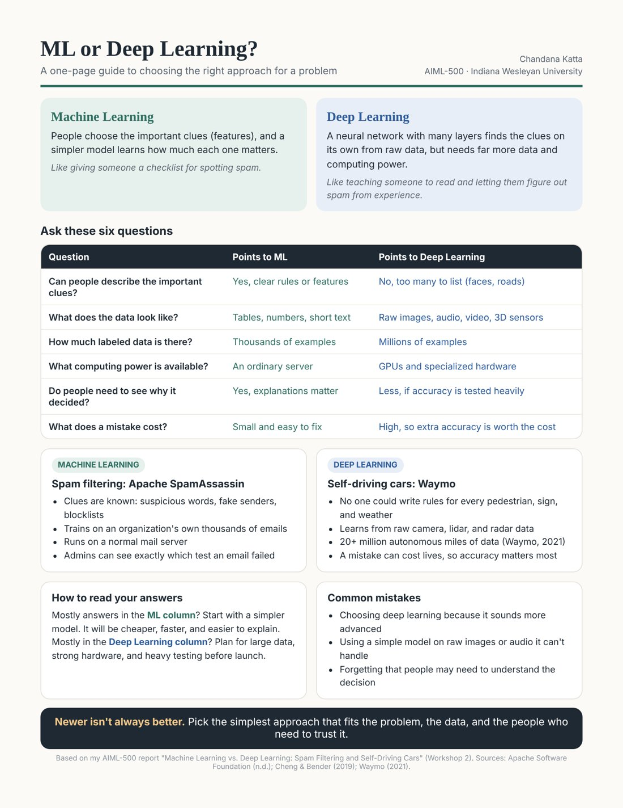
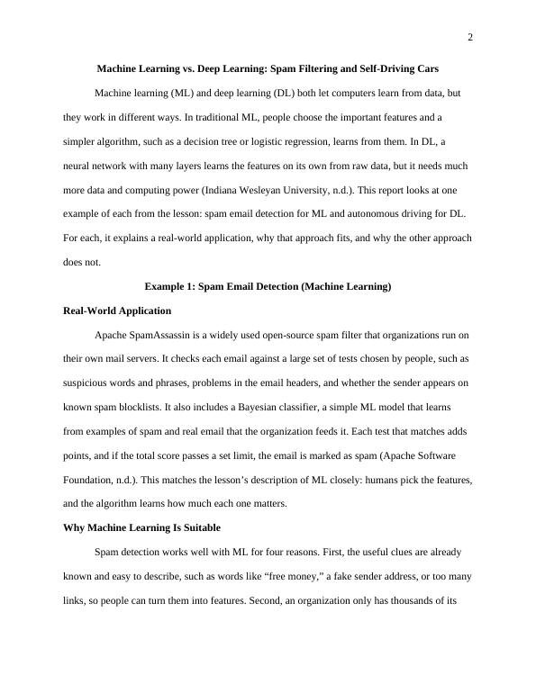

ML or Deep Learning? A Decision Guide
A research report and a one-page guide that explain when a simpler machine learning model is the right tool, and when a problem really needs deep learning, using two real-world systems: a spam filter and a self-driving car.
Introduction
Many teams assume deep learning is always the better choice because it sounds more advanced. In practice, picking the wrong approach wastes money, slows projects down, and can produce systems nobody can explain. For a course report, I compared one simple machine learning system and one deep learning system that are both used in the real world, and explained why each approach fits its problem. I then turned the report into a one-page guide that anyone can use to make this decision.
Description
This artifact has two parts:
- The report (APA format): Apache SpamAssassin as the machine learning example and Waymo's self-driving cars as the deep learning example. For each, it explains why that approach fits and why the other one does not.
- The decision guide: a one-page summary with six questions to ask (clues, data type, data size, computing power, explainability, cost of mistakes), the two real examples, and common mistakes to avoid.
Objective
To understand the real difference between traditional machine learning and deep learning, not just the definitions, and to be able to justify which approach a real problem needs based on its data, its cost, and the people who must trust the results.
Process
- Pick examples from the lessonI chose spam email detection as the machine learning example and autonomous driving as the deep learning example, since they sit at opposite ends of the spectrum.
- Find real-world systemsI researched Apache SpamAssassin, an open-source spam filter that combines tests written by people with a simple Bayesian model, and Waymo, whose driverless cars use neural networks on camera, lidar, and radar data.
- Argue both sidesFor each example, I explained why the chosen approach fits and why the other approach would fail, looking at data size, computing power, explainability, and the cost of mistakes.
- Compare side by sideI summarized both examples in a comparison table, which became the core of the decision guide.
- Turn it into a toolI rewrote the findings as six simple questions and a one-page layout so non-specialists can use it when planning an AI project.
Evidence


Tools and Technologies Used
- Machine learning concepts: feature engineering, Bayesian classifiers, decision trees, logistic regression
- Deep learning concepts: neural networks, convolutional neural networks (CNNs), sensor fusion
- Research from Apache SpamAssassin documentation and Waymo's technical blog
- Microsoft Word (APA report) and HTML/CSS for the guide, exported to PDF
- Claude (Anthropic) to help organize research and draft, with every fact checked against sources
Value Proposition
This artifact shows that I can look past the hype and choose the right AI approach for a real problem. I can explain the trade-offs between accuracy, cost, data, and explainability in plain language, which helps teams avoid expensive mistakes before a project starts.
Unique Value
Most comparisons of machine learning and deep learning stop at definitions. This one is built on two real systems people use every day and argues both sides: why each approach fits, and why the other would fail. The guide also includes the cost of a mistake as a deciding factor, which is often left out but matters most in fields like transportation, healthcare, and finance.
Relevance
Organizations are under pressure to "use AI," and many jump straight to the most complex option. A clear way to decide between simpler models and deep learning helps teams control costs, meet explainability requirements in regulated industries, and choose systems they can actually maintain and trust.
References
Apache Software Foundation. (n.d.). Apache SpamAssassin README. https://metacpan.org/release/JMASON/Mail-SpamAssassin-3.3.1/source/README
Cheng, S., & Bender, G. (2019, January 15). AutoML: Automating the design of machine learning models for autonomous driving. Waymo. https://waymo.com/blog/2019/01/automl-automating-design-of-machine/
Waymo. (2021, October 28). The Waymo Driver handbook: Teaching an autonomous vehicle how to perceive and understand the world around it. https://waymo.com/blog/2021/10/the-waymo-driver-handbook-perception.html